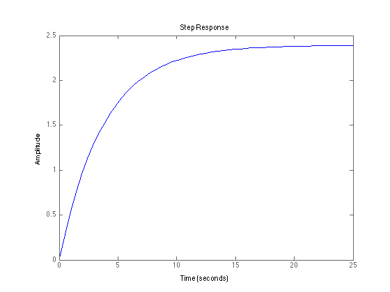
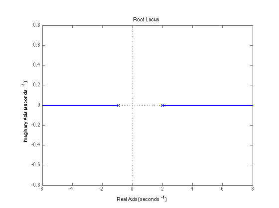

Homework 6 - Digital Control Systems
% Problem 7.6 K = 1; num = [K*(1-exp(-1))]; den = [1 -exp(-1)]; Gz = tf(num, den); Tcl = Gz/(1+Gz); step(Tcl) % Problem 7.14 num = conv([1-exp(-1)], [-0.5 1]); den = [0.5+0.5*exp(-1) 1-exp(-1)]; sys = tf(num, den) figure; rlocus(sys)
Transfer function: -0.3161 s + 0.6321 ------------------ 0.6839 s + 0.6321 